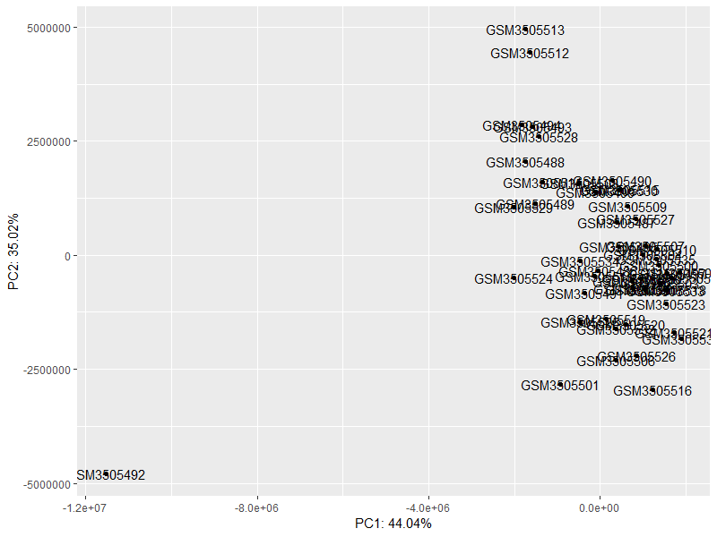
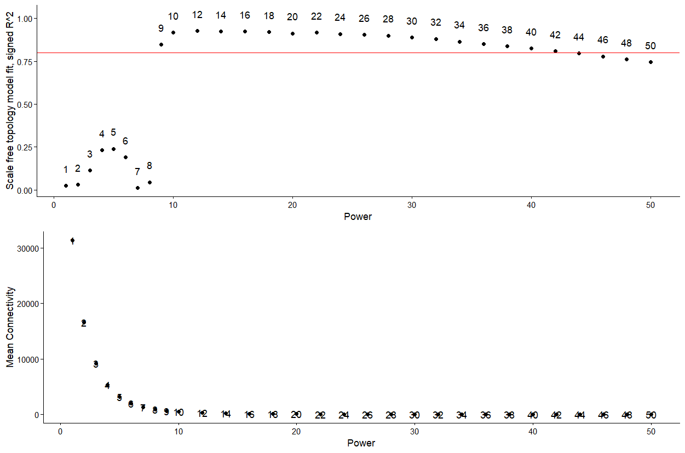
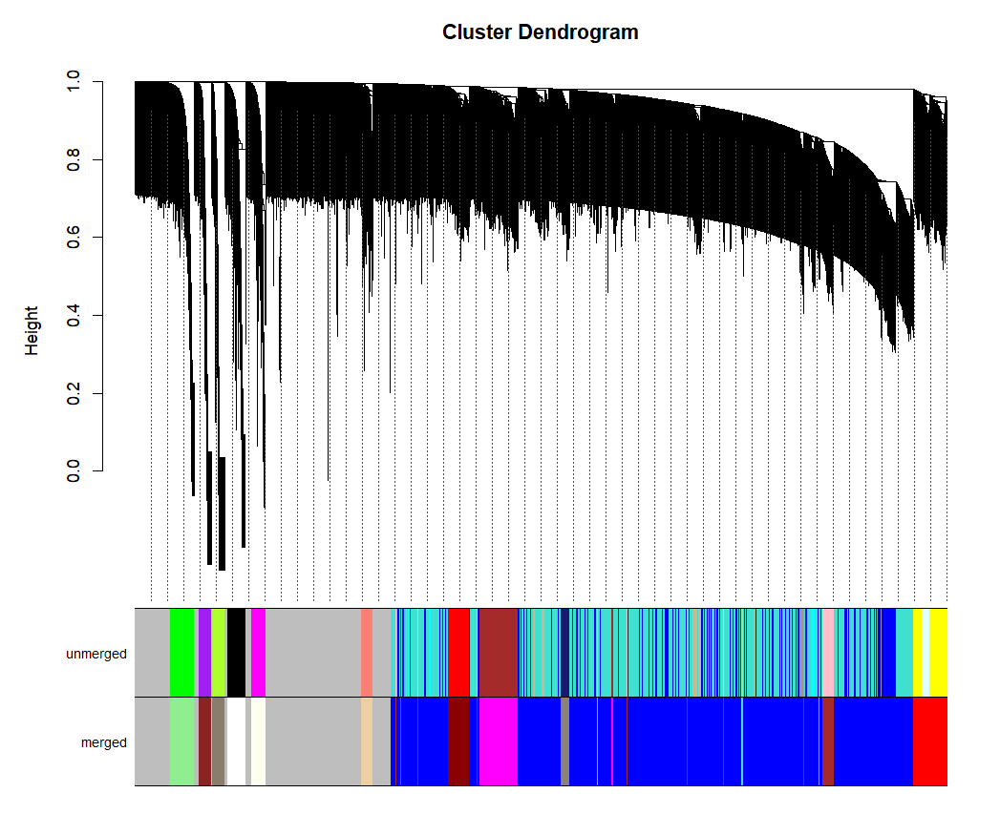
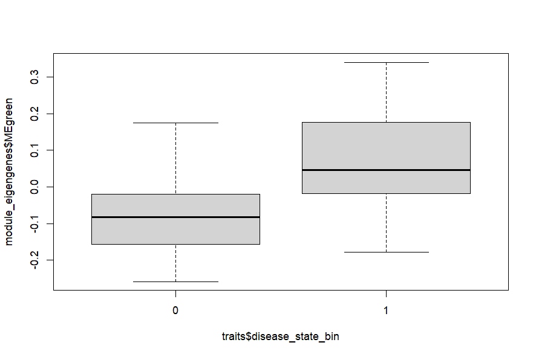
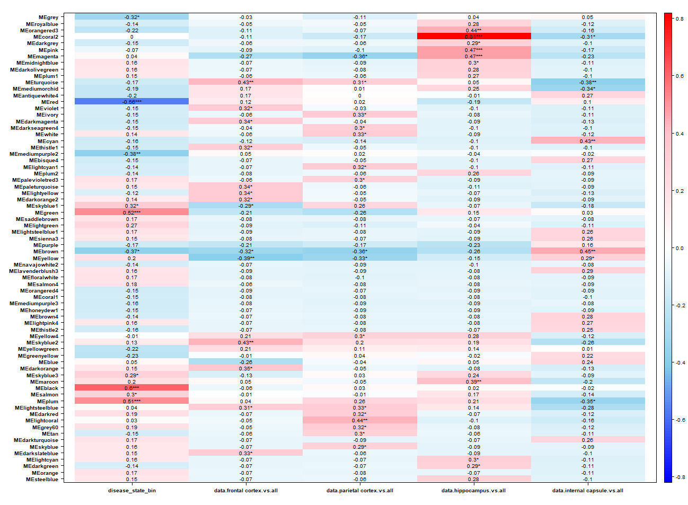
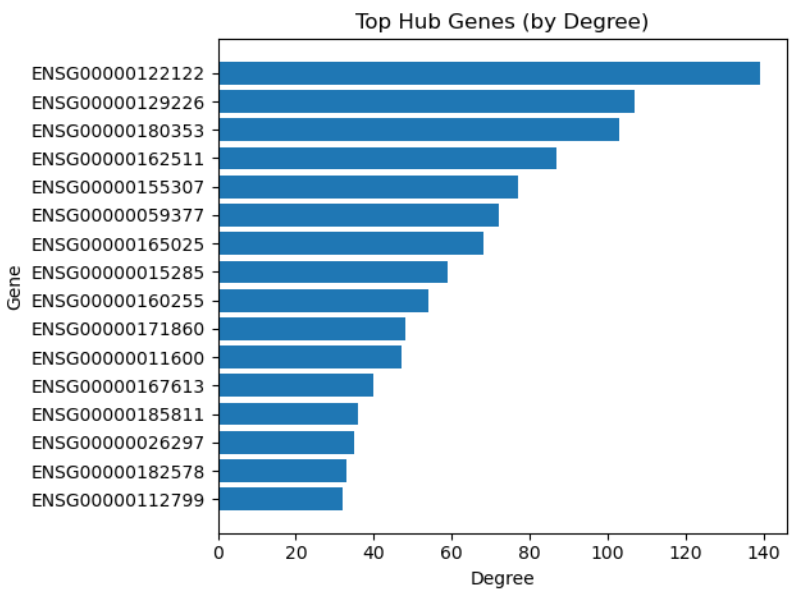
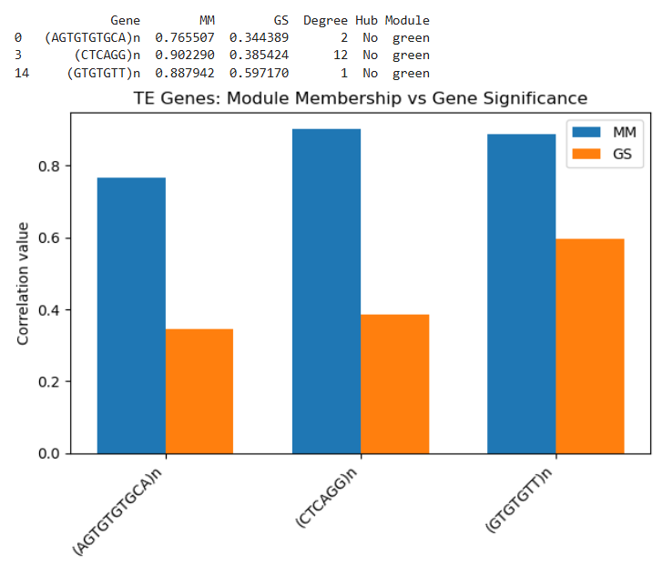
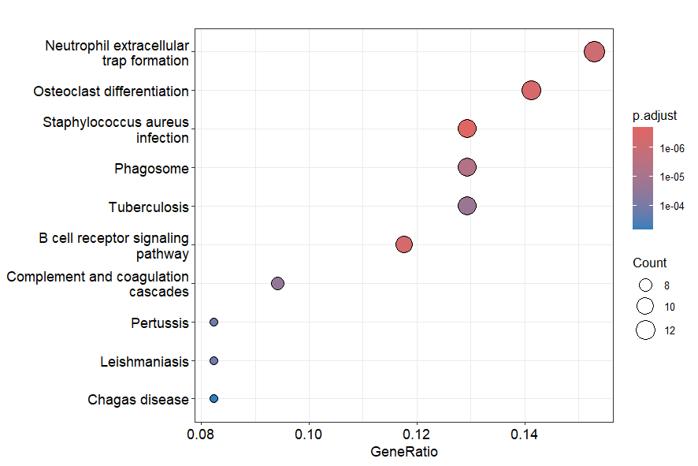
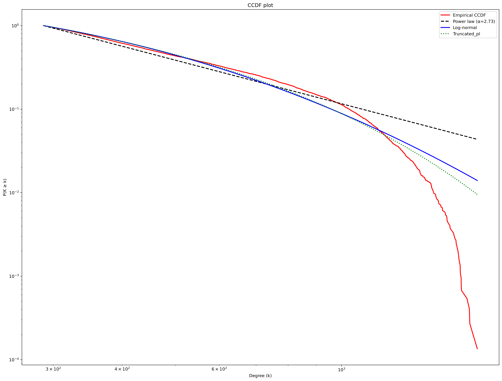

About The Project
The heart of biology lies in DNA (De-oxy ribonucleic acid), a complex molecule serving as the blueprint of our lives. It carries all the genetic information of the individual—encoding everything that defines us, right from controlling our development, growth to all our bodily functions. However, for decades, DNA was believed to be rigid and static. But this is not true! Some regions can move from one location to another, altering gene expression, driving evolution, and contributing to diseases. These are called Transposable Elements.
This project explores gene co-expression networks using WGCNA to identify modules associated with disease conditions. The focus is on understanding biological pathways and key genes involved in the progression of Multiple Sclerosis. We study the role of Transposable Elements ("Jumping Genes") and their interaction with key players as potential biomarkers — uncovering hidden players that remain elusive otherwise. We utilise the knowledge and concept of network science to delve deep into this unexplored area and to understand the relationships and interactions between these elements.
01 Goals of the Project
- Construct a co-expression network
- Identify modules associated with biological traits
- Explore the role of both genes and transposable elements in these modules
02 What is WGCNA?
WGCNA stands for Weighted Gene Co-expression Network Analysis. It is an R software package for studying biological networks based on pairwise correlations between variables. We can identify clusters (modules) of highly correlated genes, relate them to phenotypic traits, and find key hub genes. It identifies groups of genes with similar expression patterns (co-expression) to understand transcriptome-wide relationships rather than analysing genes in isolation. Thus, it is a great tool for visualising patterns and relationships between gene expression profiles.
03 Dataset
We utilise gene expression data that provides information about how different regions of DNA are expressed in MS. These data are publicly available in the repository — Gene Expression Omnibus (GEO), a publicly available database where all data generated from high-throughput biological experiments are stored, and onto which analysis is performed for drawing useful scientific insights.
The RNA-seq count data (normal gene expression data) was obtained from the database. For quantifying Transposable Element expression, a specialised tool called TELESCOPE was utilised. Both matrices were obtained, merged, and processed using normalisation techniques. The final dataset therefore consists of normal gene expression data and Transposable Element expression data from both healthy and disease individuals.
04 Tools Used
05 Methodology & Results
Matrix Construction
The matrix constructed consists of normal gene expression and transposable element expression arranged in rows and columns, where rows represent gene names and columns represent sample names. A total of 72,761 genes were taken for this study.
Data Pre-processing
Detection of outlier genes using hierarchical clustering and PCA methods was performed. Outlier genes were removed and the entire dataset was normalised to correct for technical variability and library-size differences. After filtering, 62,757 genes were taken forward for analysis.

Outlier samples observed and removed from the dataset.
Picking Soft Threshold Power (β)
Soft thresholding power in WGCNA raises gene correlation values, emphasising strong correlations and reducing noise. β is chosen such that correlation is > 0.8 and an optimal mean connectivity is selected to ensure a biologically meaningful network.

Adjacency & TOM Calculation
Adjacency was calculated using the soft-threshold power and converted to a Topological Overlap Matrix (TOM). TOM is superior to adjacency in measuring gene connectivity as it accounts for shared neighbours between genes. Due to dataset size, the entire dataset was split into 5 blocks and TOM was calculated separately for each.

Dendrogram depicting how similar genes are merged into modules.
Module Detection & Eigengenes
Modules were defined within each block based on gene similarity, and each module was assigned a unique colour. In total, 66 modules were created. For each module, an eigengene was calculated — representing the first principal component — summarising the entire gene expression profile of all genes within that module.
Correlating Modules with Traits
Modules were correlated with traits such as disease state and results were visualised as a heatmap. The module MEgreen showed significant correlation with the disease trait. The median corresponding module eigenvalue was higher compared to the healthy state.

Identifying Significant Modules
Based on correlation scores, the module with high correlation associated with disease state was selected. Red boxes in the heatmap denote higher correlation (possible upregulation); blue boxes denote lower correlation (possible downregulation).

Network Construction
Cytoscape was used for constructing the network for the selected module. Connection strength threshold was set to 0.2; edges below this are considered noise.
Hub Gene Identification & Network Visualisation
The top 10% hub genes of the module were identified and relationships between Transposable Elements and other genes were studied.

Top 10% hub genes and their respective degree.

MEgreen module network — genes highly correlated with the disease state.

MEgreen module network with highlighted hub genes.
Module Membership & Gene Significance for TE Genes
A graphical presentation was made to understand module membership and gene significance for observed TE genes, providing a better understanding of the role of Jumping Genes in the disease state.

Pathway Enrichment Analysis
Pathway enrichment analysis was performed to understand the function of genes and their roles in biological pathways. The analysis revealed that a higher gene ratio is involved in inflammatory or immune activation biology, implicating the role of these genes in such pathways.

Network Topology — Scale-Free Analysis
Parameters such as Kmin and α were calculated. The empirical data plotted using CCDF (Complementary Cumulative Distribution Function) was compared with power law, log-normal, and truncated power law distributions to assess whether the network follows a scale-free topology.

CCDF degree distribution plot: empirical data vs distribution models.
06 Outcome of the Project
After successfully utilising WGCNA and constructing a weighted gene co-expression network, modules with genes showing significant correlation with the disease state (individuals with Multiple Sclerosis) were identified, and the presence of Transposable Elements was confirmed. These transposable elements showed high correlation to the module and close connections with few of the top hub genes, implicating their role in disease progression.
The observed close-to truncated scale-free topology may indicate that the network is a more stable system where few hub genes exist, controlling multiple pathways — making it more robust to targeted attacks and less prone to single-point failure. It also indicates the presence of biological constraints on hub connectivity.
Network science thus helps us transition from single-gene analysis to a system-level understanding, serving as an important tool for discovering key genes, understanding their roles, behaviour, and how they are implicated in a particular disease.
Ref References
- Langfelder, P., & Horvath, S. (2008). WGCNA: an R package for weighted correlation network analysis. BMC Bioinformatics, 9,559.
- Love, M. I., Huber, W., & Anders, S. (2014). Moderated estimation of fold change and dispersion for RNA-seq data with DESeq2.Genome Biology, 15(12),550.
- Bendall, M. L., De Mulder, M., Iñiguez, L. P., et al. (2019). Telescope: Characterisation of the retrotranscriptome by accurate estimation of transposable element expression. PLoS Computational Biology, 15(9),e1006453.